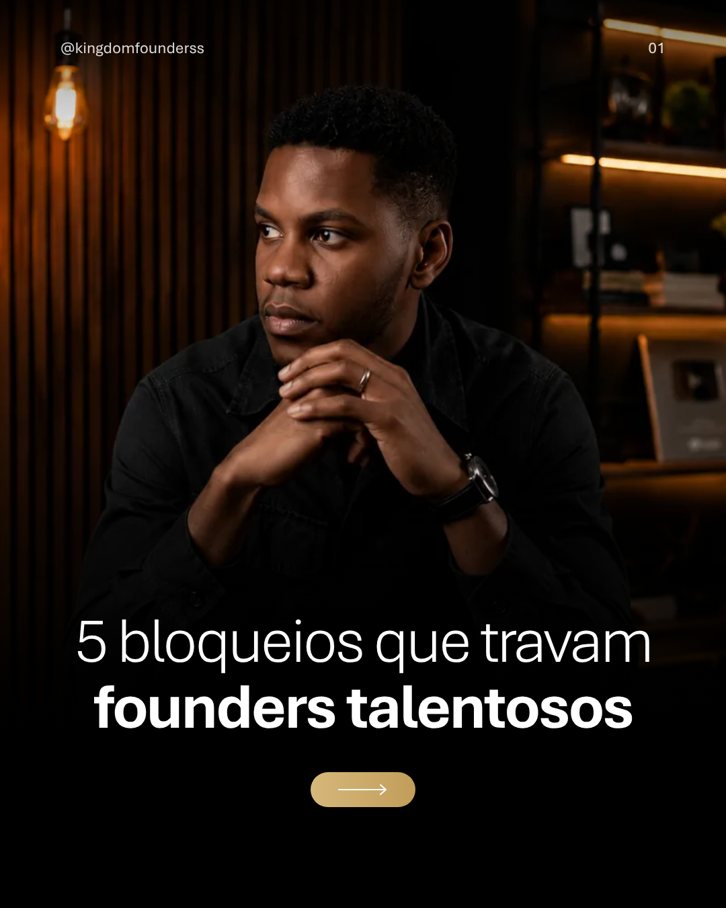
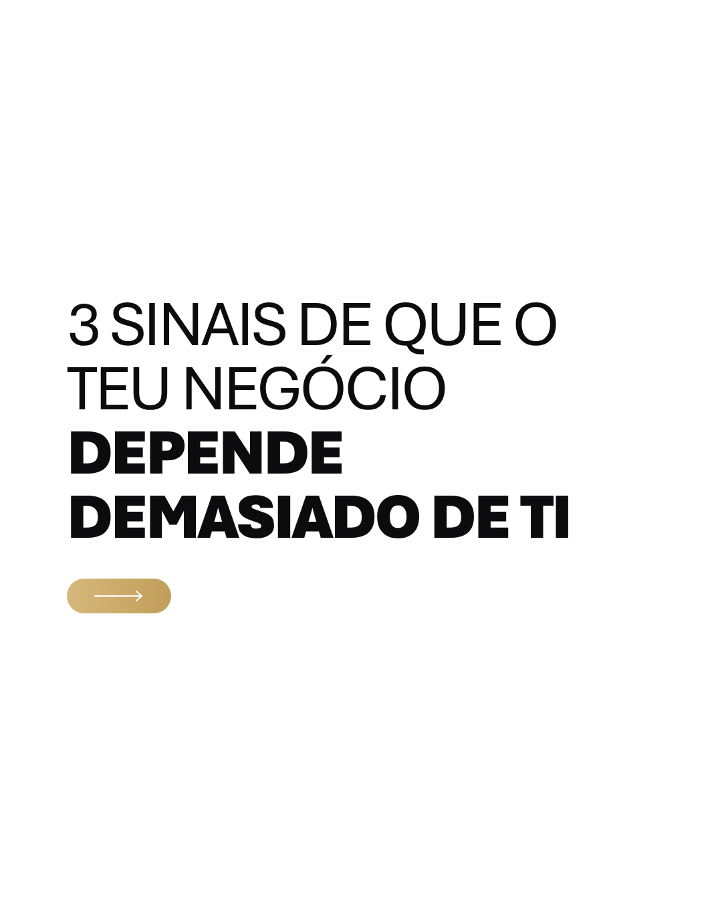

Identidade, voz e sistema visual para tudo o que a Kingdom Founders publica.
Versão 1.0 · Outubro de 2026 · Kingdom Company
Kingdom Founders · Brand BookÍndice
Índice
01
A marca
Essência · Oferta central · Metodologia da Tricotomia · Avatar · Para quem é · Transformação
02
Personalidade
Arquétipo · Tom de voz · Vocabulário e frases-assinatura · Pilares de conteúdo
03
Identidade visual
Logótipo · Cores · Tipografia · Estilos de título · Regras de texto · Fotografia · Grelha do post · Modelos · Perfil no Instagram · Fazer e não fazer · Checklist
Kingdom Founders · Brand Book01 · A marca
01
A marca
“O negócio que estás a construir exige uma versão de ti que ainda estás a tornar-te.”
Kingdom Founders · Brand Book01 · Essência
A pessoa por trás do negócio
A Kingdom Founders não existe para dar mais informação. Existe para transformar quem és, alinhar o que estás a construir e desenvolver a estrutura necessária para sustentar o crescimento.
O que é
Mentoria de 4 semanas para founders, criada pela Kingdom Company e conduzida por Shelton Douglas.
Propósito
Ativar a identidade, governar as emoções, potenciar o propósito e transformar o negócio.
Crença central
Os maiores bloqueios de um founder são invisíveis. Mais conhecimento técnico não os resolve.
Promessa
Transformar bloqueios em clareza, disciplina, posicionamento e execução.
Fonte: founders.kingdomcompny.com
Kingdom Founders · Brand Book01 · Oferta central
Oferta central
8
Sessões ao vivo
Terças e quintas, 19h30, Google Meet privado, até 1h45.
4
Semanas
Para identificar, trabalhar e consolidar novos padrões.
33
Vagas por turma
Proximidade e uma rede de founders com ambição semelhante.
Bónus do ecossistema Kingdom
1 ano na plataforma de cursos online
Destaque de 1 ano no marketplace de soluções
Acesso prioritário ao Mastermind Kingdom Tracktion
Templates de marketing, vendas e gestão
Founders Community depois da mentoria
A entrada é por aplicação, não por pagamento. Todo o conteúdo leva a uma ação: "Fazer a minha aplicação".
Kingdom Founders · Brand Book01 · Metodologia
A Metodologia da Tricotomia
Resultados sustentáveis nascem do alinhamento entre três esferas. Quando uma está desalinhada, mais conhecimento técnico raramente resolve o problema.
01 EspiritualidadeAlinha-te com o propósito. Princípios para governar as decisões e a fé no centro do que se constrói.
02 Desenvolvimento pessoalTransforma aquilo que te trava: identidade, disciplina e inteligência emocional.
03 Performance no negócioTransforma clareza em resultados: posicionamento, marketing, vendas, gestão e estrutura.
Espiritualidade
Desenvolvimento pessoal
Performance no negócio
Founder alinhado
Kingdom Founders · Brand Book01 · Avatar
O founder que sabe o que fazer, mas não avança
Quem é
Empreendedor moçambicano, com negócio ou projeto (mesmo em fase de ideia). Consome conteúdo e cursos. Tem fé ou procura propósito. Quer crescer no espiritual, no emocional e no negócio.
Os sinais que vive
Planeia, mas adia na hora de executar.
Sem ele, as vendas abrandam e tudo trava.
Trabalha muito, sem controlo das finanças.
Evita aparecer por medo do julgamento.
Procura validação antes de agir.
Meses bons seguidos de recuos sem explicação.
O que deseja
Clareza para decidir, disciplina para terminar o que começa, confiança para se posicionar, um negócio que não dependa só dele e fé, propósito e negócio alinhados.
Bloqueios invisíveis
PerfeccionismoSíndrome do impostorBloqueio de execuçãoBloqueio de autoimagemNecessidade de aprovaçãoMedo de rejeiçãoMentalidade de escassezCrenças limitantesAutossabotagem
Kingdom Founders · Brand Book01 · Para quem é
Esta mentoria não é para toda a gente
Damos o método e acompanhamos de perto: isso é 20% do caminho. Os outros 80% são a execução de cada founder. O conteúdo atrai quem executa e afasta quem procura atalhos.
Para quem é
Quer resultados concretos, não mais conteúdo.
Aceita sair da zona de conforto.
Tem um negócio ou projeto, mesmo em fase de ideia.
Quer crescer nas três esferas em conjunto.
Aplica o que aprende entre sessões.
Para quem não é
Quer enriquecer da noite para o dia.
Espera uma fórmula mágica.
Quer assistir sem executar.
Não quer olhar com honestidade para os bloqueios emocionais e espirituais.
Kingdom Founders · Brand Book01 · Transformação
Os mesmos desafios. Uma pessoa diferente a enfrentá-los.
Antes da Kingdom Founders
Depois da Kingdom Founders
Sabe o que fazer, mas continua a adiar.
Transforma clareza em decisão e decisão em execução.
Começa projetos sem consistência.
Tem disciplina para terminar o que começa.
Tem medo de aparecer e posicionar-se.
Comunica com confiança e assume o posicionamento.
O negócio depende demasiado de si.
Cria processos para o negócio não depender de cada movimento seu.
Tenta resolver tudo sozinho.
Tem acompanhamento e uma comunidade de founders.
Falta clareza sobre o propósito.
Alinha fé, propósito e negócio para construir com direção.
Kingdom Founders · Brand Book02 · Personalidade
02 · Arquétipo
O Mago, com a voz do Sábio
Mago
Arquétipo principal: transformação
A marca promete mudar a pessoa, não acrescentar informação: "transformar quem és", "a tua identidade é ativada". O Mago revela o que está invisível (os bloqueios) e torna possível o que parecia travado.
No conteúdo: antes e depois, revelações, viradas de mentalidade, histórias de founders transformados.
Sábio
Arquétipo secundário: princípio e método
A transformação assenta num método (Tricotomia), em princípios do Reino e em 6 anos de experiência. O Sábio ensina com clareza, diagnostica com honestidade e fundamenta na Bíblia.
No conteúdo: princípios, versículos explicados, diagnósticos, frameworks práticos.
Proposta deduzida do site. Toque de Governante: "mentalidade de governo", estrutura e liderança.
Kingdom Founders · Brand Book02 · Tom de voz
Tom de voz
Falamos com o founder por "tu", como um mentor que acredita nele e por isso não lhe facilita a vida.
Direto
É: claro, sem rodeios. Não é: agressivo ou frio.
"Vamos ser diretos."
Profundo
É: vai à raiz, nomeia o invisível. Não é: superficial ou motivacional vazio.
"Como tomar paracetamol para curar a malária."
Fé prática
É: fé aplicada a decisões e negócio. Não é: sermão ou religiosidade.
"Coloca a tua fé no centro daquilo que estás a construir."
Exigente
É: responsabiliza para a execução. Não é: promessas fáceis.
"20% é o método. 80% é a tua execução."
Português de Moçambique e de Portugal: tu, equipa, telemóvel, "estás a construir". Frases curtas. Metáforas do dia a dia moçambicano.
Kingdom Founders · Brand Book02 · Vocabulário
Palavras e frases-assinatura
Usar
founderbloqueios invisíveisexecuçãoidentidadepropósitoprincípios do Reinomentalidade de governotricotomiaclarezaestrutura
Evitar
"Enriquecer rápido", "dinheiro fácil"
"Fórmula mágica", "segredo"
Promessas de resultado garantido
Jargão em inglês quando há palavra portuguesa
Tom de sermão ou de culpa
Frases-assinatura
Os maiores bloqueios de um founder são invisíveis.
Não basta ter uma visão. Precisas de te tornar capaz de a carregar.
Os mesmos desafios. Uma pessoa diferente a enfrentá-los.
O problema nunca foi falta de informação.
20% é o método. 80% é a tua execução.
Kingdom Founders · Brand Book02 · Pilares de conteúdo
Pilares de conteúdo
Os três pilares espelham a Tricotomia. Em cada semana, os três aparecem; nenhum pilar fica mais de uma semana sem publicação.
Pilar 1 · cerca de 30%
Espiritualidade
Princípios do Reino e prosperidade e crescimento à luz da Bíblia.
Para: histórias, revelações, capas emocionais, princípios do Reino.
B · Contraste de peso
5 bloqueios que travam founders talentosos
Aptos Light + Aptos Bold no destaque. Tracking −40, entrelinha 1,02. Botão dourado de deslizar.
Para: listas, aprendizagens, carrosséis educativos com foto.
C · Cartão claro
3 sinais de que o teu negócio depende demasiado de ti
Fundo branco. Aptos Regular em caixa alta + Aptos Black no destaque, alinhado à esquerda.
Para: ganchos diretos e provocações, sem foto.
Kingdom Founders · Brand Book03 · Modelos
Modelos: estilos B e C
Botão de deslizarCápsula 156 × 52 px, degradê Dourado claro → Dourado Founders, seta longa branca. Substitui "ARRASTE PARA ENTENDER" nos estilos B e C.
Perfil e número@kingdomfounderss no topo, centrado (capa dupla) ou à esquerda com o número à direita (capa com título em baixo).
Capa duplaFrase em duas partes: a primeira no topo, a continuação em baixo, ligadas por reticências. A foto fica no meio.
Cartão claroBranco puro, margens de 100 px, título centrado na vertical; o destaque em Black pode ocupar duas linhas.
B · Capa dupla

B · Título em baixo

C · Cartão claro
Kingdom Founders · Brand Book03 · Perfil no Instagram
Perfil no Instagram
kingdomfounderss
KINGDOM FOUNDERS | MENTORIA
Bio proposta (135 de 150 caracteres)
Espiritualidade • Desenvolvimento Pessoal • Negócios Desenvolve o espírito, governa as emoções, escala o negócio. ⤵ Faz a tua aplicação
founders.kingdomcompny.com
E
Eventos
S
Sobre
M
Membros
B
Bastidores
C
Cadastro
Nome de utilizador@kingdomfounderss · nome: KINGDOM FOUNDERS | MENTORIA · categoria: Formação.
BioPor "tu", como o resto da marca. A bio atual mistura "Aprende" (tu) com "seu Espírito" (você) e usa maiúsculas a meio da frase.
DestaquesAlternam de propósito: preto com ícone de linha dourado e branco com ícone preto (Eventos, Sobre, Membros, Bastidores, Cadastro). Novos destaques seguem a alternância. Nomes sem ponto final.
Linkfounders.kingdomcompny.com, a página de aplicação. Toda a chamada à ação aponta para lá.
GrelhaAlternar estilos A, B e C para o perfil não ficar monótono; nunca dois cartões claros seguidos.
Kingdom Founders · Brand Book03 · Fazer e não fazer
Fazer e não fazer
Fazer
Fotos reais, escuras e quentes.
Título em 3 tempos, centrado.
Uma palavra emocional em dourado itálico.
Falar por "tu" e nomear o bloqueio.
Terminar com um próximo passo claro.
Rever ortografia antes de publicar.
Não fazer
Títulos inteiros em itálico, ou em caixa alta fora do estilo C.
Misturar dois estilos de título no mesmo post.
Instrument Serif sem itálico.
Mais de uma cor de destaque.
Fundos coloridos, gradientes vivos ou neon.
Promessas de dinheiro fácil.
Versículos fora de contexto ou sem referência.
Mais de 45 palavras num slide.
Kingdom Founders · Brand Book03 · Checklist
Checklist antes de publicar
Mensagem
Liga-se a um dos 3 pilares.
Nomeia um bloqueio ou um princípio.
Fala por "tu".
Termina com ação: guardar, comentar ou aplicar.
Texto
Sem erros de ortografia ou de espaços.
Versículos com referência correta.
Título em 3 tempos, uma palavra dourada.
No máximo 45 palavras por slide.
Visual
Foto real com tratamento âmbar.
Texto fora das margens de 90 px.
Nada por cima de rostos.
Fontes Aptos e Instrument Serif.
Porque não basta ter uma visão. Precisas de te tornar capaz de a carregar.